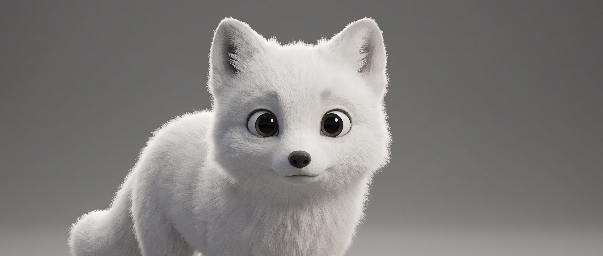
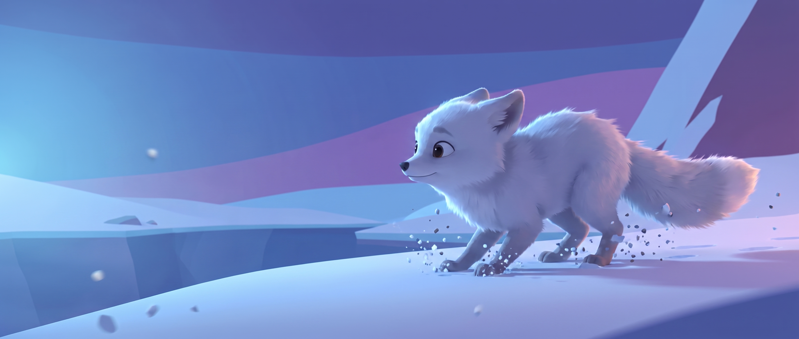

Animation, bandes annonces, comptines pour enfants : la méthode d'un studio qui en a fait son métier — pas sa curiosité du week-end.
YAMAKASI — Fondateur & Directeur créatif, OKAPI WORLD MÉDIA
Avant la théorie · La preuve
Ce que ce pipeline a déjà produit en conditions réelles
0
Spectateurs, 1re
ILLUSION, comédie musicale hybride — Méga Place de Croissy-Beaubourg, juillet 2026. Diffusion YouTube + BNC TV.
0
Prix en festivals
7 ans de réalisation. Des jurys de cinéma, pas des vues achetées.
0
Top 3 · AICFF 2026
IN CUSTODY sélectionné parmi les 3 meilleurs films africains. Projection à Dallas, septembre 2026.
0
Personnages · série jeunesse
« Je Suis Unique » — série animée en production pour un client, du character design à la livraison.
Je ne vous parlerai de rien que je n'aie pas livré. Tout ce qui suit sort de projets qui ont un budget, un client, une date de sortie — et un public qui a payé sa place.
Preuve · À l'écran
ILLUSION — long métrage hybride séquences chantées entièrement animées
🎬
Glissez ici image ILLUSION 1
Personnage 3D · décor illustré
🎬
Glissez ici image ILLUSION 2
Séquence chantée · lipsync
🎬
Glissez ici image ILLUSION 3
Antagoniste · direction de jeu
Une règle fondatrice tient tout le film : ce qui est vivant a du volume, ce qui est construit reste dessiné. Les personnages en 3D, les décors en illustration. Ce n'est pas un effet — c'est une thèse de mise en scène, décidée avant la première génération.
Deux minutes de contexte
Pourquoi m'écouter à cette heure-ci
Le terrain
Réalisateur et directeur créatif. École de cinéma, plateaux, festivals. L'IA est arrivée après le métier — pas à la place.
Le studio
Okapi World Média : production de films, contenus de marque, animation. Des contrats signés, des livrables datés, des clients qui reviennent.
La position
« On ne fait pas du contenu. On fait du cinéma. » L'IA est un département de plus — pas un raccourci pour éviter le métier.
Le contrat de cette masterclass
Ce soir je vous donne la carte. Pas les clés du coffre.
✦ Ce avec quoi vous repartez
Le pipeline complet, étape par étape
Un prompt professionnel construit en direct devant vous
Une scène décomposée en plans, pour de vrai
Les 5 erreurs qui ruinent 90 % des projets
L'anatomie d'une comptine et d'une bande annonce
◆ Ce qui reste au studio
Quel modèle pour quel registre — nos tests comparatifs
Le système complet de cohérence de personnage
Nos blocs de prompt caméra / matière / références
La chaîne de droits musicaux
Les correctifs de bugs qui nous ont coûté 6 mois
Tout ça s'apprend — dans L'ÉCOLE OKAPI. On en reparle à la fin.
Partie 1 · Films d'animation 3D
L'IA ne fait pas de films. Vous, si.
Le mythe du bouton magique a fait plus de dégâts que n'importe quel modèle. La vérité : l'IA a fait tomber le prix du rendu, pas le regard du réalisateur. Un film d'animation IA raté est presque toujours un film mal dirigé — pas mal généré.
Partie 1 · La méthode — cliquez sur une étape
Le pipeline : 5 étapes, aucune optionnelle
01
Histoire
humain
02
Direction artistique
humain
03
Images clés
humain + IA
04
Animation
humain + IA
05
Montage & son
humain
Regardez la répartition : 3 étapes sur 5 sont du cinéma classique. C'est exactement pour ça que les cinéastes gagnent à ce jeu.
Pratique 01 · Du script au plan — cliquez sur un plan
Une phrase de scénario = trois plans, pas un
« Le renardeau hésite au bord du ravin, puis saute. » — Un débutant génère ça en une fois et obtient une bouillie. Voilà comment un réalisateur le découpe :
2,5 sGros plan pattes
3 sVisage · l'hésitation
2 sLe saut · large
Trois plans courts battent systématiquement un plan long. Les modèles sont bons sur 2 à 4 secondes — au-delà, ils dérivent. Le découpage n'est pas une contrainte artistique : c'est la contrainte technique transformée en style.
Pratique 02 · Construisons un prompt — cochez les blocs
Un prompt n'est pas une phrase. C'est une feuille de service.
Les 4 premiers blocs : ce soir, gratuits. Les 3 derniers : École Okapi — ce sont eux qui séparent « joli » de « cinéma ».
Niveau de contrôle0 %
Pratique 03 · L'image clé — avant toute vidéo
D'abord une image. Jamais directement une vidéo.

Modèle image · plan fixe, pose de référence
Pourquoi une image d'abord : elle coûte quelques secondes à générer, contre plusieurs minutes pour une vidéo. On corrige l'identité du personnage ici — pas après avoir payé dix générations vidéo ratées.
Ce qu'on verrouille sur cette image : proportions, teinte de fourrure, forme des yeux, texture. C'est elle qui devient la référence — le point zéro de toute la scène.
Le bloc [SUJET] de tout à l'heure sert ici tel quel : « jeune renard des neiges, oreilles plaquées, regard fixe ». Le style et la lumière aussi. Seul le bloc [ACTION] disparaît — une image ne bouge pas.
Pratique 04 · Texte → vidéo, sans référence
On saute l'image et on tente direct.
Texte seul → vidéo · aucune image d'entrée
Ce qui se passe : le modèle invente le renard et son mouvement en même temps. Deux problèmes à résoudre d'un coup — c'est là que la plupart des dérives naissent.
Le symptôme classique : un renard qui change légèrement de morphologie entre la première et la dernière image du même plan, parce que rien ne l'ancre.
Quand ça reste utilisable : pour explorer vite une idée de mouvement ou de cadrage, avant de savoir ce qu'on veut vraiment. Jamais pour un plan qui doit tenir dans un montage.
Pratique 05 · Texte → vidéo, avec référence
On repart de l'image clé. Tout change.
🎬
Glissez ici la vidéo générée avec référence
Image clé + texte → vidéo
Ce qui change : le modèle n'a plus qu'un seul problème à résoudre — le mouvement. L'identité, elle, est déjà fixée par l'image d'entrée.
Résultat direct : plus de stabilité de la morphologie, de la fourrure, du regard, plan après plan. C'est la différence entre un renard et le même renard.
La règle du studio : aucune génération vidéo sans image de référence validée en amont. Sans exception — même pour un plan de 2 secondes.
Pratique 06 · Le rendu studio
Même sujet. Même modèle. Tous les blocs, cette fois.
✨
Glissez ici le rendu final — image de référence + prompt complet studio
Image de référence, caméra, matière, verrous — les sept blocs, ensemble. C'est le même sujet que sur les deux essais précédents. La différence ne vient d'aucun réglage caché : elle vient uniquement de la précision de ce qu'on a écrit.
Le prompt exact qui produit ce plan reste au studio — vous en avez vu la structure, pas le contenu.
Méthode · Repères visuels
Pourquoi verrouiller un point de départ ET d'arrivée
Donner une seule image de référence laisse le modèle deviner où le mouvement doit s'arrêter. Donner DEUX images — un point de départ et un point d'arrivée — transforme une supposition en trajectoire contrainte.
Start frame

End frame
Méthode · Le résultat
Entre ces deux images, le mouvement se resserre
Pratique 07 · Le même plan, deux prompts — glissez la poignée
Voilà ce que valent les trois blocs verrouillés
Prompt basiquePrompt studio
✨
Glissez ici votre rendu « après »
Même sujet. Même modèle. Même durée de génération. La seule différence tient dans trois blocs de texte. C'est pour ça que le prompting est un métier — et pas une case à remplir.
Pratique 08 · Le mur n°1 — cliquez sur le bouton
La cohérence de personnage : le tueur silencieux
Notre système : sheet multi-angles verrouillée dès l'étape 3, banque de références nommées par personnage, injection systématique en entrée, contrôle qualité automatisé sur ██ points de repère faciaux, procédure de récupération quand un plan dérive…
🔒 Le système de cohérence Okapi — École Okapi
Partie 1 · Le mur n°2
Le rendu « animation junior IA » que tout le monde a
Ce rendu 3D lisse, générique, interchangeable, qui crie « généré par IA » à dix mètres. Ce n'est pas une fatalité technique : c'est un choix par défaut que vous n'avez pas fait consciemment.
Pourquoi ça arrive : sans direction artistique écrite, le modèle retombe sur sa moyenne statistique — le style le plus vu de son entraînement.
Le test à faire ce soir : montrez une image de votre projet à quelqu'un. S'il ne peut pas la distinguer de n'importe quel autre projet IA, vous n'avez pas un film. Vous avez un rendu.
La sortie : une bible visuelle écrite avant la première génération — et le bon modèle pour le bon registre. Chaque modèle a un tempérament. On ne caste pas un modèle au hasard, comme on ne caste pas un acteur au hasard.
Photoréalisme cinéma → modèle A · 3D stylisée jeunesse → modèle B · Créatures & SF → modèle C + bloc peau renforcé · Fidélité produit & texte → modèle D · Mode & édito → modèle E…
🔒 Notre matrice modèle × registre — École Okapi
Cadeau complet · aucun verrou
Les 5 erreurs qui ruinent 90 % des projets
1
Générer avant d'écrire. On explore, on s'émerveille, on brûle son budget — et deux semaines plus tard on n'a toujours pas d'histoire.
2
Juger sur un plan, pas sur une séquence. Une belle image isolée ne prouve rien. Le film vit dans les raccords.
3
Ignorer le son. La moitié de l'émotion est sonore. Un film muet généré en 4K reste un brouillon en 4K.
4
Vouloir des plans longs. Les modèles dérivent au-delà de quelques secondes. Pensez montage nerveux, pas plan-séquence.
5
Cacher que c'est de l'IA. La transparence est un atout de marque, pas un aveu. Le public pardonne l'outil — jamais le mensonge.
Partie 2 · Musique, bandes annonces, comptines
Le son est la moitié du film
Trois formats, une même logique. L'IA compose vite ; vous, vous savez pourquoi ça doit émouvoir. C'est cette division du travail qu'on va décortiquer — avec des exemples que vous pourrez refaire demain matin.
Pratique 09 · Le brief musical — comparez
On ne prompte pas un genre. On prompte une scène.
// Prompt type, 6 mots musique épique orchestrale, émotion, cinématique
// Résultat : la même bouillie héroïque que 400 000 autres. // Aucun accroche, aucune identité, inutilisable en montage.
// Le même besoin, écrit comme une note au compositeur TEMPOlent, ~72 BPM, qui accélère à mi-parcours INSTRUMENTATIONguitare acoustique en fingerpicking seule, pad discret au refrain VOIXmasculine française, ténor, registre grave, jamais forcée ÉMOTIONun jeune homme qui doute de ses rêves, seul, la nuit STRUCTUREintro nue / montée / rupture / résolution suspendue INTERDITSpas de batterie, pas de montée épique, pas de chœurs [ 3 blocs supplémentaires — verrouillés ]
Notez le bloc INTERDITS. C'est celui que personne n'écrit — et c'est souvent lui qui sauve le morceau. Un modèle musical ne devine pas votre retenue : il faut la lui interdire.
Pratique 10 · Anatomie d'une comptine — cliquez sur un segment
60 secondes, quatre blocs, zéro place pour l'improvisation
0–8 sAccroche
8–24 sCouplet · 1 idée
24–36 sRefrain
36–60 sVariation + refrain
Le piège n°1 : écrire pour plaire aux parents. Testez sur de vrais enfants avant de publier — jamais sur des adultes. Et une comptine sans clip animé laisse 80 % de l'audience sur la table : c'est ici que les deux sujets de cette nuit se rejoignent.
Pratique 11 · La grammaire du trailer — cliquez sur un acte
Un trailer se monte sur la musique, jamais sur l'image
0–15 s · plans 3-4 sLe monde
15–45 s · plans 1-2 sLa rupture
45–55 sLe silence
Notre workflow : découpage inverse depuis la piste → grille de ██ plans typés → génération par lots avec continuité vérifiée → sound design en ██ couches → mixage broadcast…
🔒 Le workflow trailer complet — École Okapi
Partie 2 · Le sujet dont personne ne parle
Générer une musique, c'est facile. Pouvoir la vendre, c'est le métier.
La question à poser avant de générer : à qui appartient ce morceau, et qu'est-ce que j'ai le droit d'en faire commercialement ?
Le piège : livrer à un client une musique dont vous ne pouvez pas garantir l'exploitation. C'est le genre de détail qui se paie deux ans plus tard.
Notre principe : la maquette générée n'est jamais le livrable final. Il y a une étape entre les deux — et c'est elle qui sécurise tout.
Notre chaîne : composition en maquette → ré-interprétation et ré-enregistrement ██████████ → dépôt et rattachement complet des droits au studio → exploitation commerciale sans zone grise, y compris en diffusion TV…
🔒 La chaîne de droits Okapi — École Okapi
C'est la question que nos clients TV posent en premier. Savoir y répondre vaut plus cher que savoir prompter.
Le cadre
Éthique & légal : les règles du studio
Transparence : tout contenu généré est signalé. Mention claire, assumée, dans les crédits. Non négociable — et devenu un argument commercial.
Pas de visages réels sans consentement écrit. Ni acteurs, ni anonymes, ni « juste pour tester ». Nos character sheets exigent des traits inventés et une asymétrie volontaire.
Le contenu jeunesse est le plus exposé : publier des comptines engage une responsabilité particulière. Validation humaine de chaque seconde publiée.
L'IA augmente les équipes : chez nous elle a créé des rôles — direction de génération, orchestration, contrôle de continuité. Elle n'en a supprimé aucun.
Ce que vous savez maintenant
Vous avez la carte. Il vous manque la route.
✦ Acquis ce soir
Le pipeline en 5 étapes et la part réelle du cinéma
Le découpage d'une scène en plans générables
Un prompt professionnel construit bloc par bloc
Les 2 murs, les 5 erreurs
Brief musical, comptine 60 s, trailer 3 actes
◆ Ce qui sépare savoir et produire
Quel modèle caster pour quel registre — et pourquoi
Le système de cohérence complet, plan après plan
Les blocs caméra / matière / verrous positifs
L'orchestration de bout en bout
Les droits, les coûts réels, la vente à de vrais clients
Et pour finir · La preuve, encore
Ce n'est pas une théorie. C'est un studio qui tourne.
0
en salle, une soirée
ILLUSION, ouverture du Camp Impact 2026.
0
long métrage en post
Séquences chantées entièrement animées. Co-production BNC TV & IMPACT X.
0
septembre · Dallas
IN CUSTODY projeté au CONTENT Media Conference, African Showcase.
0
prix en festivals
Le cinéma d'abord. L'IA ensuite.
🎞️
Glissez ici votre meilleur plan ou la vidéo teaser
Le plan qui clôt la démonstration
Personne dans cette salle ne peut vous montrer ça en même temps qu'une méthode. C'est exactement ce que je vends : pas des astuces d'outil — un système de production qui a déjà passé l'épreuve du public.
La suite
L'ÉCOLE OKAPI
Tout ce qui était verrouillé ce soir, déverrouillé : la matrice des modèles, le système de cohérence, les blocs caméra / matière / verrous, l'orchestration, la chaîne de droits — et un accompagnement sur votre premier projet, jusqu'à la livraison.
🔒 → 🔓 Places limitées · Tarif de lancement pour les présents ce soir
Lien d'inscription dans le chat Zoom · yamakasi@okapiworldmedia.com
À vous
Questions & réponses
Posez tout — je réponds à tout. (Sauf ce qui est derrière les verrous. Vous savez où le trouver.)